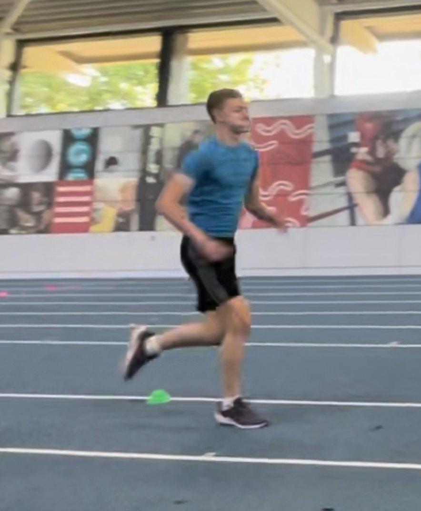
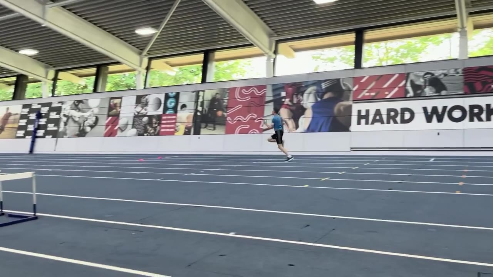

Testing Footage
Sprint & jump tests on film
Click either video to play in place — testing sessions filmed at PROformance.

Sprint · Session 1
Track sprint testing · session 1
Verified times captured: 5m 0.91s · 10m 1.62s · 30m 3.89s · top speed 34 km/h.

Sprint · Session 2
Track sprint testing · session 2
Second sprint session at the same intensity — top-end pace repeated and confirmed across the run.

Jumping

1 · Squat phase
2 · Airborne
Jump testing compilation
Countermovement jump, Abalakov, broad jump and box jumps. Verified: CMJ 60cm · Abalakov 62.5cm · broad 305cm.